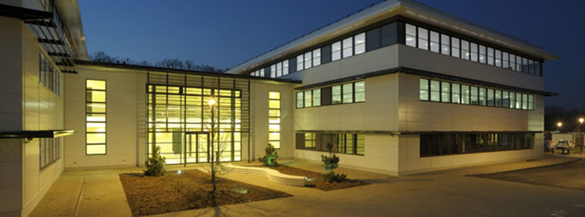
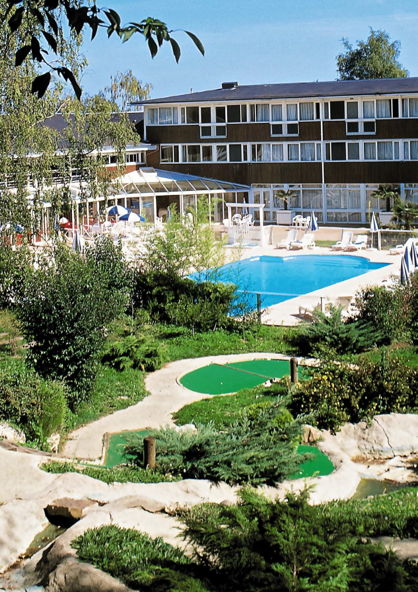

"Très Grand Centre de calcul du CEA" (TGCC)
"CEA Very Large Computing Center"
Paris (Bruyères-le-Châtel), France
Lectures and hands-on sessions
The lectures and the hands-on will take place at Teratec Campus, next to the Très Grand Centre de calcul du CEA (TGCC), in a room with one terminal (laptop) per person.

Since 2010, the TGCC has been designed to welcome the French petascale supercomputer Irene funded by GENCI for the PRACE Research Infrastructure. It also hosts the computing resources for the Computing Center for Research and Technology (CCRT).
Accommodation
All the participants will have the opportunity to be hosted in a single or a double room at the Belambra Dourdan (according to registration choice and availability). Breakfast and diner are included in the reservation and price.
A bus will make the link between the hotel and the training rooms.

Venue
-
Reach Paris, France
- By plane : Roisy CDG airport or Orly airport
- By train : Any Paris train station -
Go to Massy-Palaiseau RER station
- Use the fast suburban train (RER) to go to the "RER B Massy-Palaiseau" station
- You will have to buy a regional ticket (Do not use "inside Paris" tickets).
- From CDG : Simply take RER B (be careful they don't all stop at Massy-Palaiseau)
- From Orly: Take Orlyval until "Antony" station and then RER B(From CDG, you can find your itinerary and timetables on https://www.transilien.com/en , from Orly, we can find timetables for Orlyval on https://www.orlyval.com/ )
-
A bus will make the connection between the station and the TGCC.